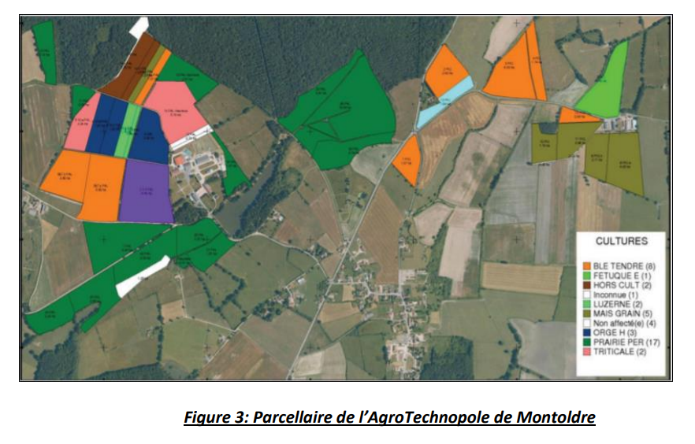

La méthode IRRINOV pour piloter manuellement l’irrigation :
Cette section présente la méthode IRRINOV R 1 développée par l’institut technique Arvalis et ses partenaires. Cette méthode propose un guide aux agriculteurs pour prendre des déci- sions d’irrigation en fonction des mesures des sondes d’humidité du sol et du pluviomètre.
Autrement dit, la méthode fournit des conseils pour répondre à trois questions :
(1) Quand l’irrigation devrait-elle commencer ?
C’est à dire quand l’agriculteur doit-il mettre en place son système d’arrosage sur la parcelle
(2) Quand lancer un arrosage (démarrage d’un tour d’eau)?
(3) Quand l’irrigation devrait-elle s’arrêter ?
Autrement dit l’agriculteur peut retirer son système d’arrosage de la parcelle. La méthode IRRINOV R est constituée d’un ensemble de tables de décision et de recom- mandations pour gérer l’irrigation d’une parcelle. Cette méthode propose de nombreuses variantes dépendant du type de sol de la parcelle et de sa culture. Nous utiliserons la méthode IRRINOV de la région Limagne pour la culture du maïs grain en sol argilo-calcaire (Arvalis, Limagrain, Chambre d’Agriculture du Puy-de-Dome, 2005). Les équipements nécessaires pour réaliser des mesures avec la méthode IRRINOV comprennent :
- Une station de mesure IRRINOV R composée de 6 sondes Watermark pour mesurer la tension de l’eau dans le sol (tensiomètre). Parmi les 6 sondes Watermark, 3 sondes sont placées à 30 cm de profondeur dans le sol et les 3 autres sondes sont placées à 60 cm de profondeur.
- Un pluviomètre pour mesurer la quantité d’eau reçue par la culture pendant un tour d’eau.
- Une station météorologique comprenant un pluviomètre pour mesurer la quantité d’eau reçue par la culture pendant une pluie, et un thermomètre pour mesurer chaque jour la température minimale et la température maximale de l’air. Les sections suivantes décrivent les configurations des équipements et fournissent des recommandations pour avoir un processus d’irrigation de bonne qualité.
Configuration de la localisation des sondes et des équipements :
La méthode IRRINOV R spécifie la localisation des équipements de mesure :
- La station IRRINOV doit être située sur le sol dominant de la parcelle à irriguer et elle doit être facilement accessible. La localisation de cette station dépend du système d’arrosage. La station doit être entre deux arroseurs et au moins à 60 mètres du bord de la parcelle. Les sondes doivent être placées sur deux rangs voisins entre des plants comme le montre le schéma de la figure 2.

- Le pluviomètre mobile doit être proche de la station IRRINOV. Sa hauteur doit être au- dessus de la hauteur maximum de la culture et en dessous de l’arroseur.
Les auteurs de la méthode IRRINOV recommandent de placer le pluviomètre sur un pied télescopique pour le maintenir au-dessus de la culture.
- La station météorologique agricole doit être éloignée de tout bâtiment ou arbre et à une hauteur spécifique (inférieure à 2 mètres, soit la hauteur maximale des cultures en champs).
Configuration de la fréquence de mesure :
La station IRRINOV R et le pluviomètre mobile doivent être placés dans la parcelle lorsque la culture atteint le stade V22 . Les mesures commencent 2 ou 3 jours après l’installation. Les sondes Watermark doivent fournir une mesure une fois par semaine ou tous les deux ou trois jours si le temps devient sec. De plus, les sondes d’humidité du sol doivent fournir une mesure :
- Avant chaque tour d’eau prévu pour confirmer ou annuler le début d’un nouveau tour d’eau;
- 24 heures à 36 heures après chaque tour d’eau pour évaluer l’efficacité de l’irrigation. Il faut éviter de mesurer l’humidité du sol moins de 24 h après la fin de l’irrigation, car les mesures sont instables.
- Après des pluies pour évaluer leur effet. Par exemple, si la quantité de pluie est in- férieure à 10 mm, la date du prochain tour d’eau ne doit pas être modifiée.
L’irrigation doit s’arrêter lorsque la culture atteint le stade R53 .
Validation des mesures :
Pour valider la mesure des sondes Watermark, la méthode IRRINOV définit un écart maximal possible entre les mesures des sondes d’une même niveau de profondeur. Précisément, cet écart est égal à 30 cbar. Si l’écart entre les mesures des sondes est supérieure à 30 cbar, cela signifie que l’une des sondes est hors service et que l’agriculteur doit aller sur le terrain pour recalibrer ou changer la sonde.
Pour obtenir la tension en cbar, la valeur mesurée par la sonde doit être multipliée par un coefficient de correction fourni par le fabricant. Le coefficient de correction est spécifique à chaque lot de sondes : par exemple les sondes de 2003 ont un coefficient de correction égal à 1,7.
Un écart de 10 à 20 cbar de tension entre deux sondes situées à la même profondeur est considéré comme normal. Pour cette raison, la méthode IRRINOV R propose d’installer trois sondes par niveau de profondeur. Les tables de décision d’ IRRINOV R proposent des seuils de mesures d’humidité du sol pour lancer l’irrigation ou un tour d’eau. Ce seuil est considéré comme atteint lorsque deux sondes sur trois fournissent une mesure au dessus de ce seuil. Les mesures jugées anormales ne sont pas prises en compte. A noter qu’une valeur mesurée de 199 cbar indique qu’il y a un problème de contact électrique entre la sonde Watermark et le sol. 3.4 Présentation des tables de décision La méthode IRRINOV R (Arvalis, Limagrain, Chambre d’Agriculture du Puy-de-Dome, 2005) propose plusieurs tables de décision pour déterminer le démarrage d’un tour d’eau. Ces tables dépendent du type de sol, de la durée du tour d’eau 4 , de la culture et de son stade de développement. Nous définissons la variable Probe30 (et Probe60) qui représente la mesure atteinte par deux sondes sur les trois sondes situées à 30 cm de profondeur (et respectivement à 60 cm de profondeur).
La table de décision 1 définit le seuil pour commencer un tour d’eau pour une culture de mais grain dans un sol argilo-calcaire. Cette table s’applique à la culture de maïs lorsque son stade de développement est entre V2 et V75 . Dans cette table, les cellules contiennent le seuil de mesure des sondes mentionné dans la section 3.3 en fonction de la durée des tours d’eau de la parcelle considérée. La première colonne d’une table de décision doit se lire comme "si la durée du tour d’eau propre à la parcelle est entre 9 à 10 jours" et "lorsque deux sondes à 30 cm de profondeur sur trois (Probe30) sont supérieures à la valeur à 30 cbar et que deux sondes à 60 cm de profondeur sur trois (Probe60) ont une valeur supérieur à 10 cbar " ou " lorsque le total (Probe30 + Probe60) est supérieur à 40 cbar ", donc l’irrigation doit commencer. Il convient à noter que pour cette table de décision, les deux premières lignes sont redondantes, car si P robe30 > 30 et P robe60 > 10 alors P robe30 + P robe60 > 40. Table 1: Valeurs de seuil en fonction de la durée des tours d’eau 9 à 10 jours 6 à 8 jours inférieure ou égale à 5 jours P robe30 30 cbar 50 cbar 60 cbar P robe60 10 cbar 20 cbar 20 cbar total 40 cbar 70 cbar 80 cbar
Système d’irrigation automatique :
À partir de cette méthode de décision dédiée à la prise de décision humaine, nous souhaitons développer un système contextuel adaptatif pour automatiser l’irrigation sur le site de l’AgroTechnoPôle d’Irstea. L’AgroTechnoPôle contient une ferme expérimentale située à Montoldre où les chercheurs peuvent tester leurs prototypes tels que des robots, des équipements de mesure, des machines agricoles et des réseaux de capteurs sans fil. La figure 3 présente les différentes parcelles cultivées appartenant à la ferme en 2018. Une station météorologique Davis Pro 2 est située sur le site. Plusieurs noeuds capteurs sont déployés dans les parcelles pour surveiller l’humidité et la température du sol.
Le système contextuel adaptatif que nous souhaitons développé doit comporter un réseau de capteurs sans fil contenant des noeuds tensiomètres capable de mesurer l’humidité du sol et des noeuds météo capable de mesurer les pluies. La localisation des équipements de mesure mentionnées dans la section 3.1, nous précise que la localisation des noeuds du réseau est nécessaire et devra être acquise pendant la phase d’acquisition du contexte.